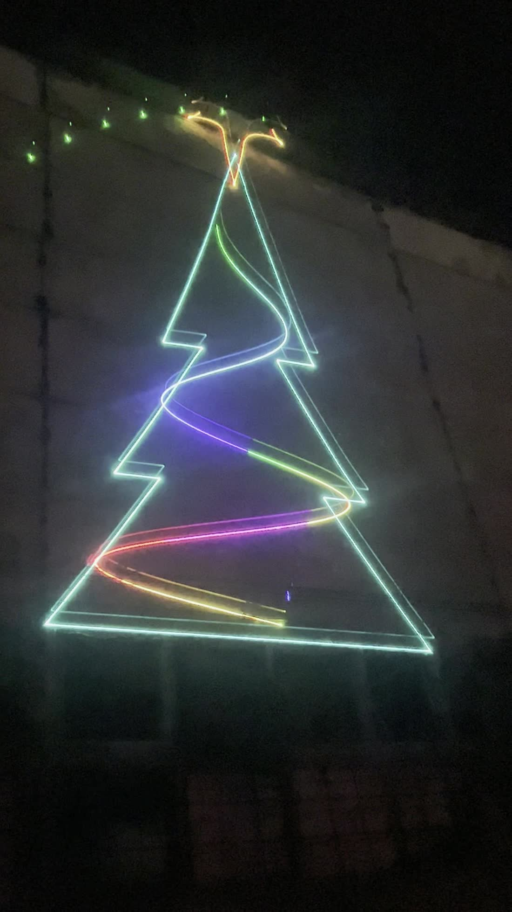
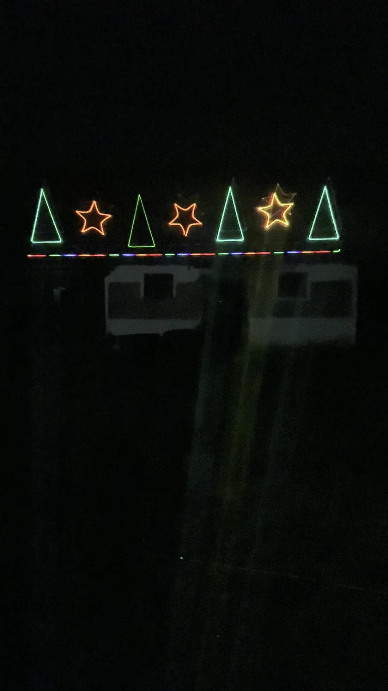
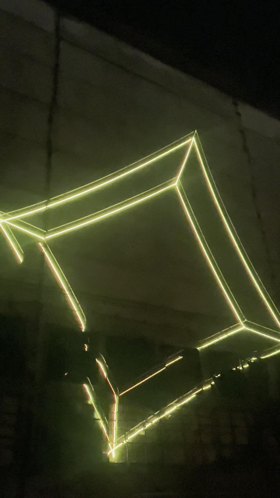

Se stinge lumina. Rămâne numele.
Trei mii de oameni, o secundă de întuneric, și pe zidul din spatele scenei apare numele artistului — scris literă cu literă de o rază care se mișcă mai repede decât poate urmări ochiul. Apoi se rupe în fascicule și sala se umple de lumină.
Oamenii scot telefoanele. A doua zi, jumătate din pozele de la eveniment au numele acela în ele.
Ăsta e lucrul care se cumpără. Nu aparatul, nu figurile — momentul.
Ce este
Toată lumea rulează aceleași figuri. Noi desenăm numele.
Un spectacol laser obișnuit trece prin aceeași bibliotecă: tuneluri, valuri, spirale. Frumoase, și identice de la un eveniment la altul. Noi scriem numele dumneavoastră — al artistului, al firmei, al orașului — cu litere calculate ca să se citească de la distanța de la care se uită lumea.
Și nu doar un nume. Textul se derulează: o strofă, o colindă, urarea primarului, numele invitaților de onoare — rând după rând, cât ține seara. Pe zid încape o poezie întreagă, nu doar un cuvânt.
Sigla dintr-un fișier vectorial. Stema oficială a localității, așa cum o are primăria. Un mesaj scris în ziua evenimentului. Se schimbă din program în câteva minute, nu din echipament.
Soluție completă
Un singur furnizor, de la desen până la aplauze.
Un show laser cere de obicei patru discuții diferite: cine face conținutul, cine aduce aparatele, cine le operează în seara aia, cine răspunde de siguranță. Aici e o singură discuție.
Conținutul
Scenele se generează cu motor propriu, nu se cumpără. Numele, sigla și mesajele sunt desenate pentru evenimentul dumneavoastră, nu adaptate din altceva.
Echipamentul
Proiectoare, carcase, cabluri, ceață. Rămân ale noastre — nu cumpărați nimic și nu depozitați nimic peste an.
Montajul și reglajul
Poziție, unghi, geometrie corectată pe suprafața reală. O fațadă strâmbă și o scenă îngustă cer lucruri diferite, și se măsoară la fața locului.
Operarea
Unde momentul contează — un refren, o numărătoare, aprinderea luminilor — cineva e la butoane toată seara. Unde nu contează, rulează singur din memoria aparatului.
Siguranța, în scris
Traseul fiecărui fascicul, punctul cel mai de jos atins de orice rază, și oprirea fizică. Se predă pe hârtie, nu se promite verbal.
Dumneavoastră aduceți data, locul și numele. Restul e treaba noastră, cap-coadă.
Pentru ce
O tehnologie, toată piața.
Iluminat festiv de oraș
Stema orașului pe primărie, de la 1 decembrie până după Bobotează. Oamenii se opresc s-o filmeze.
Concerte
Numele lui, mare cât scena, în secunda dinaintea primului acord. Pe urmă fasciculele intră pe refren, din stânga și din dreapta.
Festivaluri
Fiecare cap de afiș își primește numele între seturi. Publicul știe cine urmează fără să anunțe nimeni.
Reclame
Sigla unui brand pe o fațadă din centru, seară de seară, săptămâni la rând. Mesajul se schimbă din program — nu se retipărește și nu se remontează nimic.
Fațade de hotel
Numele hotelului pe propria fațadă, în fiecare seară. Iar când are o nuntă sau o conferință — numele clienților lui, pe zid. Ceva ce hotelul poate vinde mai departe, nu doar plăti.
Lansări de produse
Momentul dezvăluirii are o singură secundă, și toată sala se uită în același loc. Numărătoarea, apoi numele produsului desenat pe peretele din spatele scenei, apoi silueta lui — și rămâne acolo cât fotografiază presa.
Deschideri
Numele noului local pe propria lui fațadă, în seara deschiderii. Se vede de la capătul străzii, și lumea vine să se uite.
Oficializări
Stema, drapelul, data. Pentru momentele care se filmează și rămân în arhiva instituției.
Evenimente corporate
Sigla companiei desenată cu lumină pe fațada hotelului, la sosirea invitaților. Primul lucru pe care îl fotografiază.
Producții TV
Conținutul se exportă la rata de cadre a camerei, nu la a noastră. Fără asta, literele ies rupte pe ecran chiar dacă pe zid erau întregi — și e problema pe care o are orice laser filmat.
Cluburi
Grafica urmărește ce pune DJ-ul în momentul ăla, nu o listă care se repetă din oră în oră.
Nunți și aniversări
Numele lor, pe fațada locației, când ies afară. Aia e poza care ajunge la toată lumea a doua zi.
Vedeți-l cu numele dumneavoastră
Scrieți un nume.
Numele unei formații, al unei firme sau al unui oraș — se desenează pe loc, cu literele reale ale motorului. Simulatorul complet calculează unghiul de scanare și inerția oglinzilor. Nu se instalează nimic.
Literele sunt exact cele pe care le desenează aparatul — un singur traseu pe fiecare, fără umpluturi. Fasciculul e încetinit ca să se vadă cum lucrează; la viteza reală trece de șaizeci de ori pe secundă și cuvântul pare fix.
Scene cumpărate dintr-o bibliotecă
Toate se generează în motor propriu, pentru evenimentul respectiv — câte cere seara, atâtea sunt. Fiecare știe câte puncte costă și câte cadre pe secundă scoate pe aparatul din dotare.
De puncte pe secundă, la 8° ILDA
Unghiul contează. O cifră de kpps fără unghiul la care a fost măsurată nu înseamnă nimic — și de obicei e aleasă tocmai pentru că nu înseamnă.
Distanța nominală de risc ocular
Traseul fiecărui fascicul se stabilește la montaj și se predă în scris. Nu se apreciază din ochi, pentru că nu se poate aprecia din ochi.
Cum funcționează
Un singur punct, care se mișcă foarte repede.
Un laser nu proiectează o imagine. Desenează cu o rază care trece de patruzeci de mii de ori pe secundă prin același traseu. Tot ce se vede e un punct în mișcare, pe care ochiul îl adună.
Din asta decurge totul. Dacă traseul e prea lung, raza se întoarce prea rar și imaginea pâlpâie. Nu dispare o parte din desen — se strică tot. Iar saltul stins dintre două figuri costă exact cât desenatul, fiindcă oglinda tot trebuie să ajungă acolo.
De aceea fiecare scenă are un număr lângă ea. Una de 2 072 de puncte are nevoie de trei proiectoare ca să nu pâlpâie. Una de 318 merge pe unul singur și mai rămâne loc de trei ori pe atât. Diferența nu se vede în simulator — se vede în seara evenimentului, în fața oamenilor.
Ce am aflat pe drum
Nimic din ce urmează nu e evident.
Fiecare rând de mai jos a costat o seară pierdută sau o filmare ratată. Le scriem pe toate, deschis, pentru că ele sunt lucrul care se cumpără de la noi. Nu aparatul.
- Negrul nu se poate desena.
- Stema Petroșaniului are ciocane negre în blazon. Un laser adaugă lumină, nu poate scoate. Ciocanele ies aurii — și scrie asta în documentație, pentru că un client care descoperă singur o abatere nedeclarată nu mai crede nimic din rest.
- Aurul moare înaintea roșului.
- Fiecare diodă are alt prag de emisie. Coborâți puterea și componenta verde a auriului se stinge prima: sigla iese roșie și pare defect de aparat.
- Carcasa nu e pentru frig, e pentru căldură.
- Proiectorul produce vreo șaptezeci de waţi și se răcește cu ventilatoare. Sigilat etanș într-o cutie, se oprește termic în a treia seară. Iar geamul se montează înclinat, altfel reflexia se întoarce în optică.
- Zăpada e cel mai scump lucru de desenat.
- Fiecare fulg e un punct izolat, iar după fiecare salt stins oglinda are nevoie de timp să se așeze. Șase fulgi costă cât o casă întreagă. Se desenează trei, și arată la fel.
- Reacția la muzică nu poate fi un fișier.
- Un show care urmărește basul nu produce de două ori același cadru, deci nu se poate salva dinainte. Se generează în timp real, în seara aia, din sunetul din sală.
- Camera trebuie să prindă un cadru întreg.
- Dacă obturatorul e mai scurt decât un cadru laser, literele ies rupte — iar filmarea arată a instalație defectă, deși pe zid totul era întreg.
E greu și cere timp. Nouă ne-a luat luni de zile, un proiector cumpărat, filmări ratate și seri în care nu mergea nimic — până la douăzeci și șase de scene care se țin pe un singur aparat și un sistem care merge și supravegheat, și singur.
Nimic din ce scrie mai sus nu e secret. Se poate afla. Dar drumul e deja făcut — iar ce vindem nu e proiectorul, ci lunile pe care nu mai trebuie să le pierdeți.
Veniți cu data, locul și numele. Restul e rezolvat.
Ce s-a proiectat până acum
Fotografii, nu randări.
Toate cadrele de mai jos sunt filmate pe clădiri reale, cu proiectorul din dotare. Le arătăm așa cum au ieșit.



Siguranță
Fasciculele stau deasupra oamenilor.
Proiecția se face pe suprafețe — zid, streașină, fundal de scenă — nu către public. Traseul se stabilește la montaj, se măsoară punctul cel mai de jos atins de orice rază din tot conul de scanare, și se predă în scris.
Aparatul se oprește de la un întrerupător fizic, iar la evenimentele unde publicul circulă cineva rămâne la el toată seara. Nu e o opțiune de preț.
Cât costă
De la 1.600 € o seară.
Atât costă un eveniment cu un proiector, cu tot cu deplasare, montaj, operare și demontare — o seară de aprindere a luminilor, un Revelion, o deschidere. Un sezon întreg de iarnă pe o fațadă, un concert cu trei proiectoare sau centrul unui oraș se calculează pe scenariu și se trimit în scris, cu costurile la vedere.
Prețul include aparatul, consumabilele, omul la butoane când e nevoie și un proiector de rezervă. Nu se facturează separat.
Contact
O seară de probă, înainte de orice contract.
Venim cu proiectorul la locul dumneavoastră — sală, scenă sau clădire — și vă arătăm cum arată numele dumneavoastră în lumină, înainte să hotărâți ceva. O seară, nicio obligație.
Răspunde Lucian Lică — cel care a scris motorul, îl montează unde e locul lui, pe acoperiș dacă acolo e locul, și stă la butoane în seara evenimentului. Nu un formular.